HOTG trophies
Every honour a player won, made as a HOTG piece. He gets the full-size one. Fans earn a numbered edition.
1 · The material
Our mark, in frosted acrylic
The master mark, cut as real pieces. The ball's white lines run through the petals, same as the logo. Our colour fades from the middle to the edge.
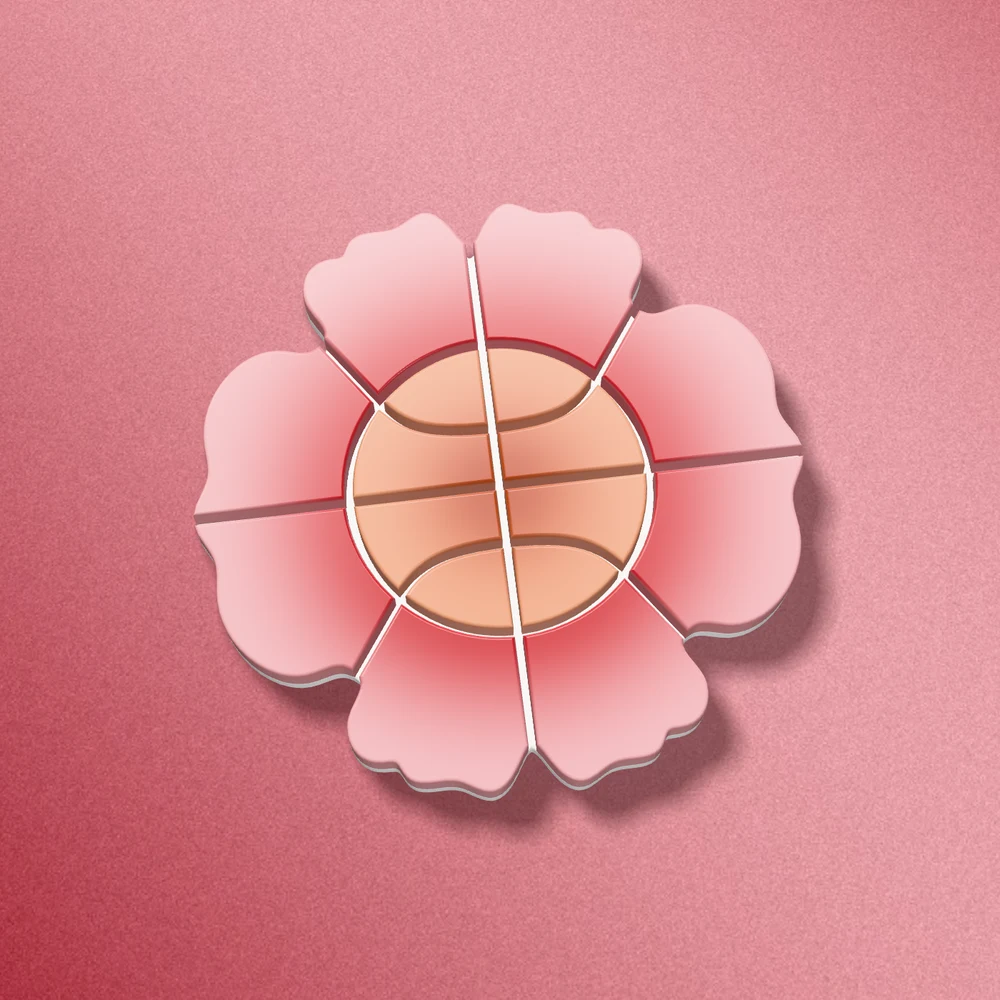
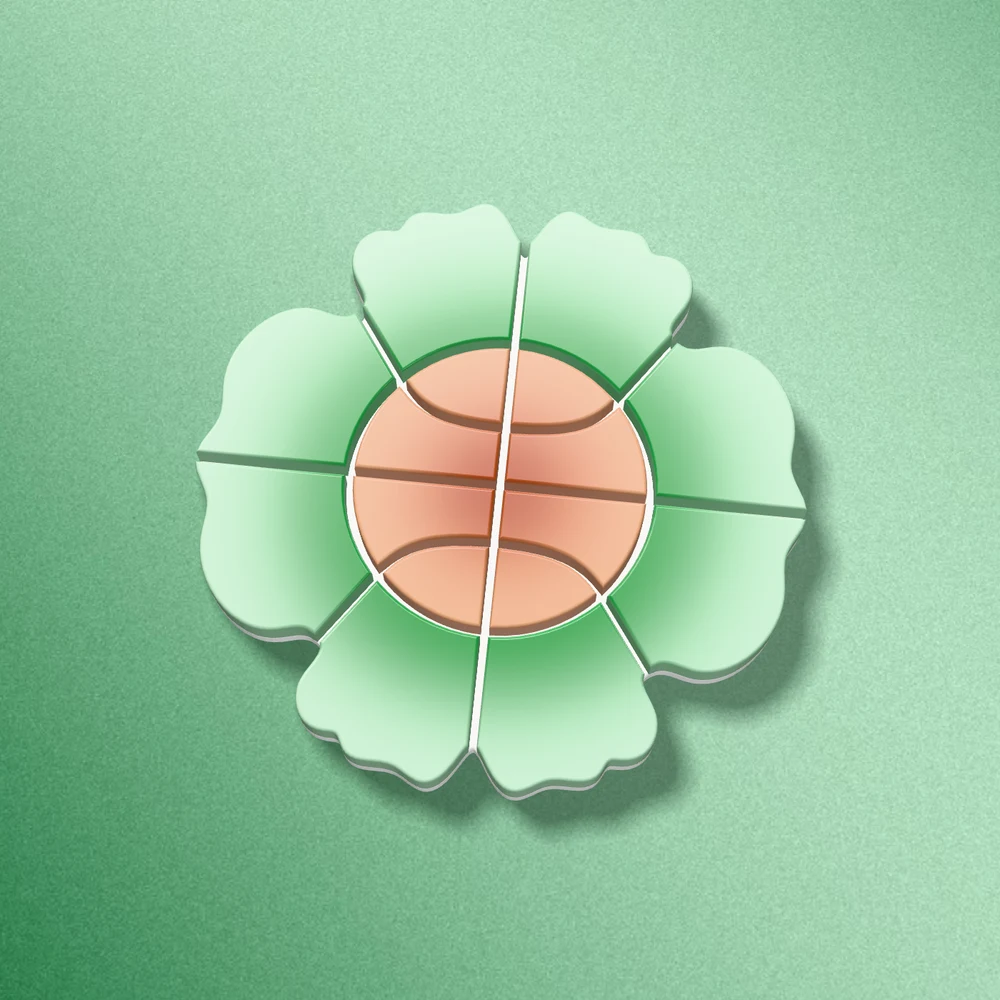
2 · Baron Davis
His six honours
Each one checked on Basketball-Reference. The shape and cut-out change by honour. His name and the honour are engraved on the base.
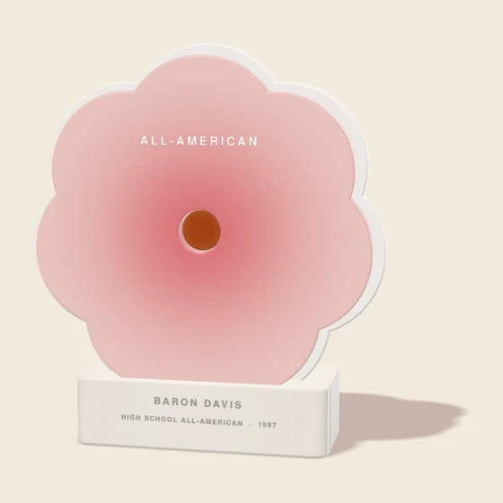

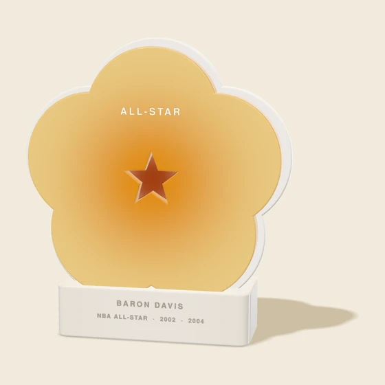

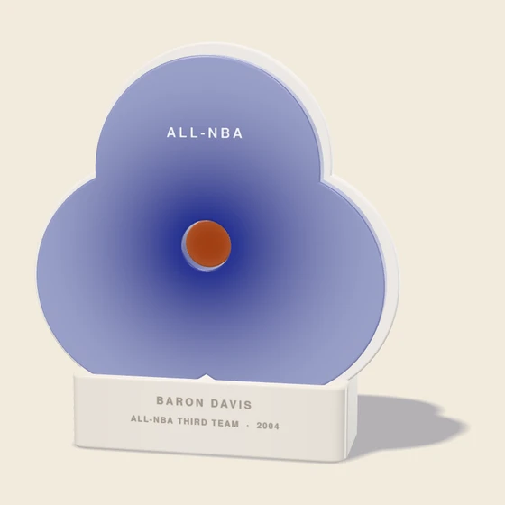
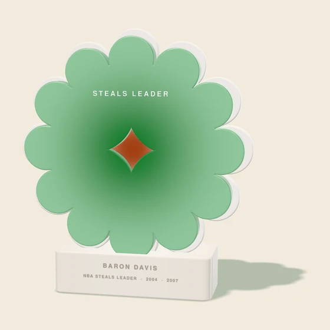
3 · Defensive Player of the Year
Dwight Howard, 2009 · 2010 · 2011
The real trophy is a bronze player in a defensive stance on a block. Ours keeps that stance, cut in our acrylic. Garnett (2008) and Draymond (2017) get the same piece with their own engraving. A full 3D statue version is next.
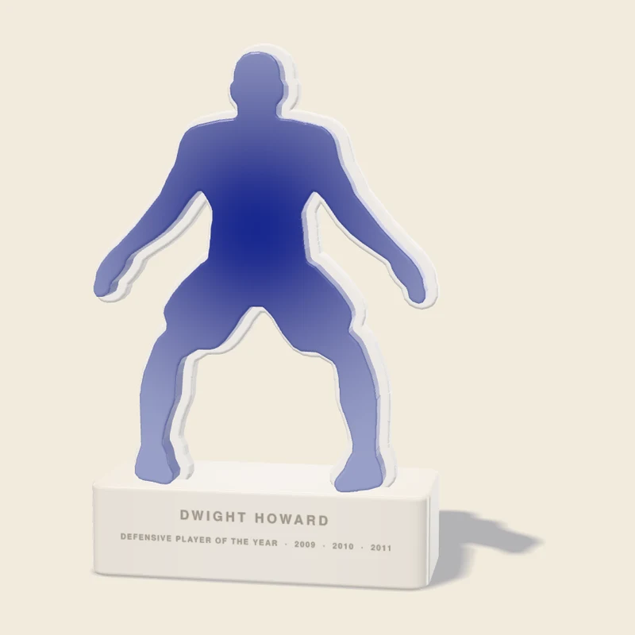
4 · Colours
Every piece in every colour
Red, green, blue and yellow. Colours can be editions, team colours, or levels.
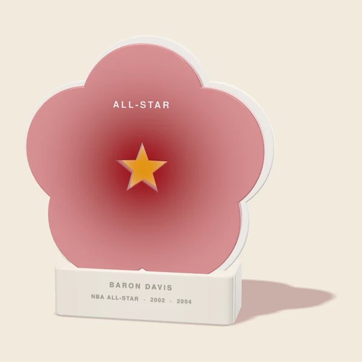
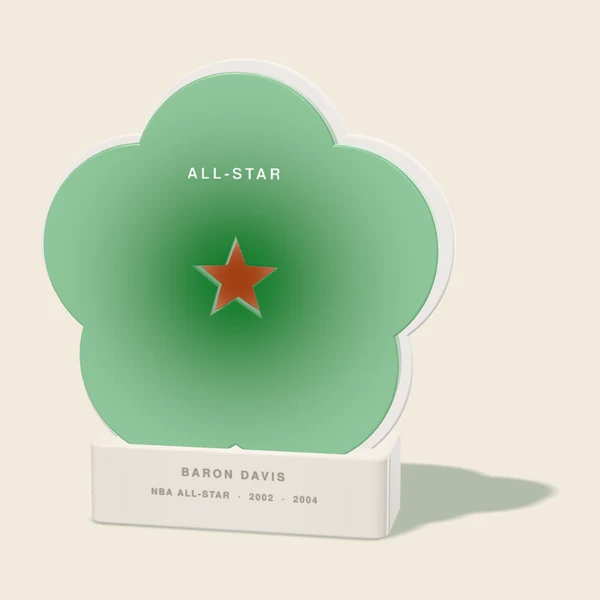
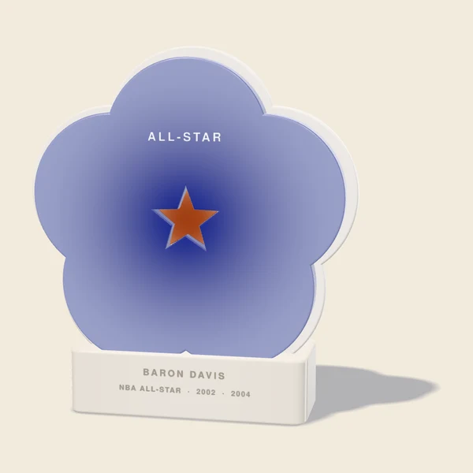
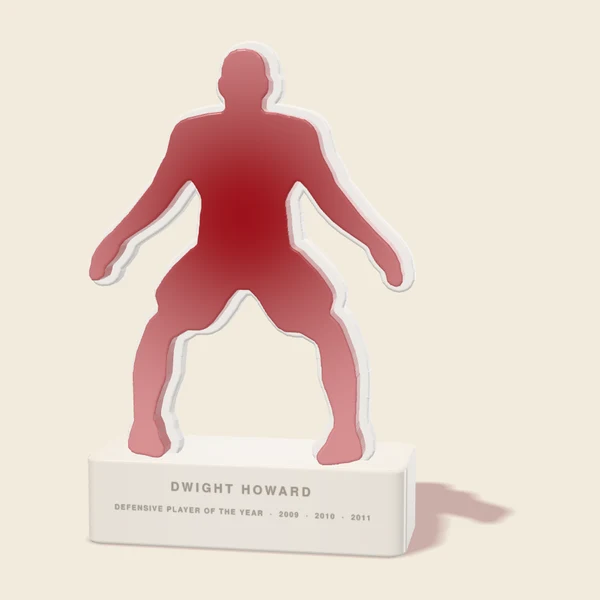
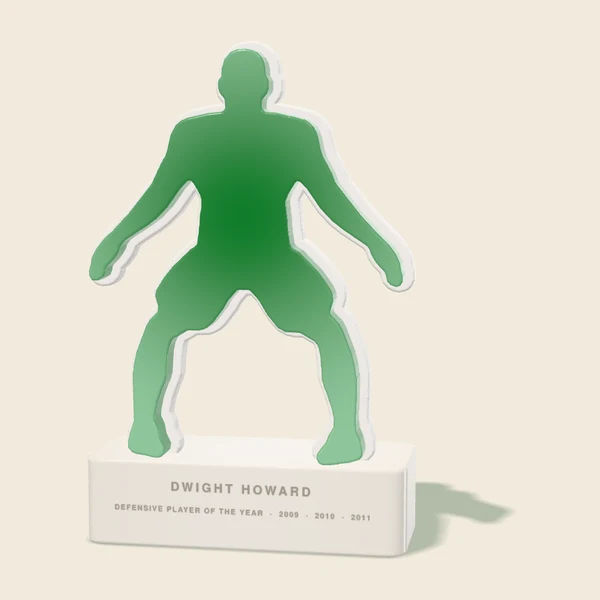
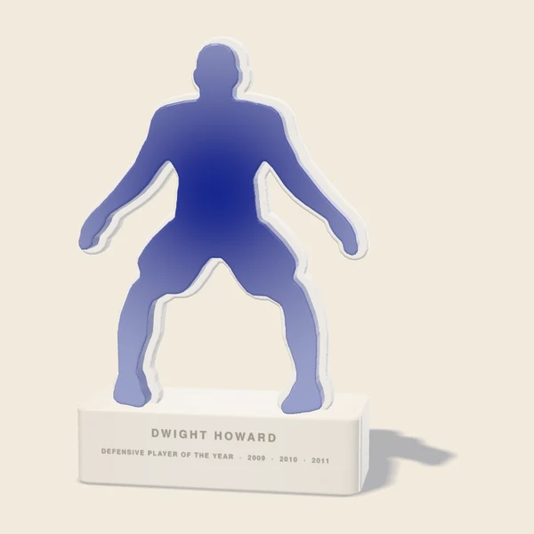
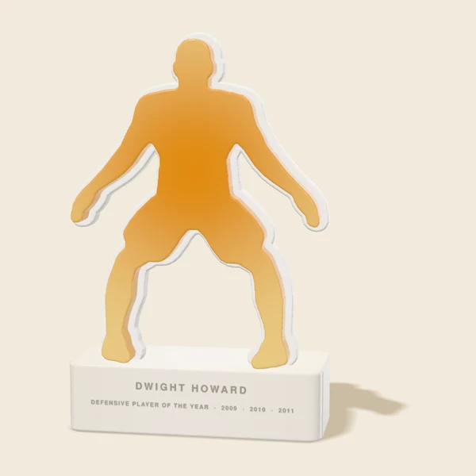
5 · What fans earn
Keychains, one for each honour
Same layers and colour as the trophy. Earned with XP from that player. Next round these become numbered editions of the trophy itself.


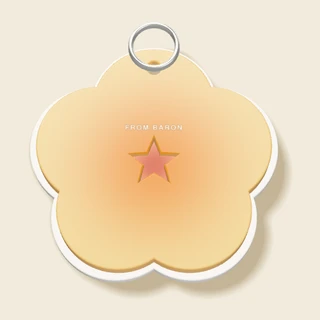

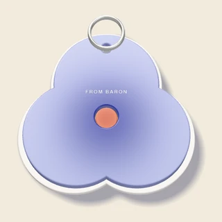

6 · In the app
Baron's profile
His trophies sit on his profile with the fan piece under each one. Open the app mockup, then tap Baron.
Next
- DPOY as a full 3D statue (waiting on the 12-credit OK).
- One design for each honour that comes with a real trophy: MVP, Finals MVP, Rookie of the Year, Sixth Man, Most Improved, titles.
- "His trophy" over "Your edition" on the profile, with the edition number and how many are left.